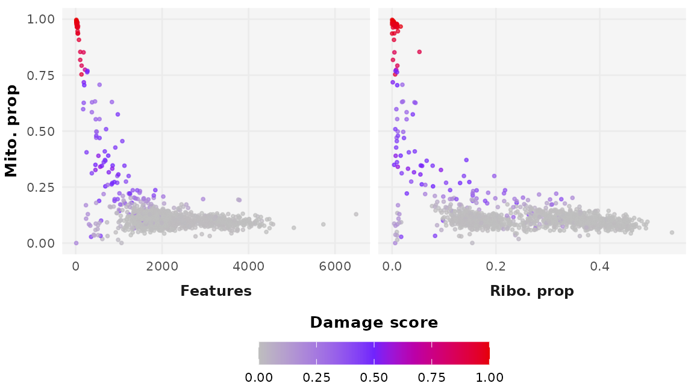

Tutorial Overview
The goal of DamageDetective is to simplify the process
of making informed and reproducible damaged cell filtering decisions.
This tutorial provides an outline of the steps needed to achieve
this:
- Data preparation
- Parameter selection
- Damaged cell detection
Ensure the following packages are installed and made available in your R environment to follow along:
-
DamageDetective,ggplot2,Seurat,SeuratData,scRNAseq,SingleCellExperiment, andpatchwork.
Data Preparation
This tutorial takes place in R, home to three popular
scRNA-seq data storage types:
- The
Seuratobject - The
SingleCellExperiment(sce) object - The matrix retrieved directly from alignment output
(
matrix.mtx,barcodes.tsv, andfeatures.tsv).
DamageDetective operates with data in a compressed,
column-oriented sparse matrix (dgCMatrix). This format
efficiently handles the sparse nature of single-cell data by indexing
only non-zero elements within each column. Each of the above data
storage types can act as the starting point for damage detection through
conversion to a sparse matrix.
Note: Due to vignette size constraints, this tutorial will only demonstrate live using data from the alignment output.
Conversion to Sparse Matrix
Using a Seurat Object
The count matrix can be extracted from the assay slot of a Seurat object. By default, this matrix is already in compressed column-oriented sparse form and can be used as input for DamageDetective.
We will use the SeuratData package to retrieve a publicly available Seurat object to demonstrate. This object stores the data from peripheral blood mononuclear cells (PBMCs) sequenced using the 10X Genomics platform.
# Retrieve the dataset of interest
SeuratData::InstallData("pbmc3k")
data("pbmc3k")
# Extract the count matrix
pbmc3k_counts <- pbmc3k[["RNA"]]$countsUsing Alignment Output
Alignment output comes in the form of three files containing the row names (genes), column names (cell identifiers), and input values (gene expression values) of the count matrix. These can be compiled using ReadMtx, a function offered by Seurat which simplifies the count matrix compilation into one function. This involves decompressing zipped files, mapping feature names to HGNC gene symbols, and converting the matrix to sparse format. ReadMtx output can be used directly for DamageDetective.
We will use publicly available alignment data from the 10X Genomics website for demonstration, specifically the ‘1k PBMCs from a healthy donor (v3)’ data available here following the link named “Feature / cell matrix (filtered)”.
# Set the file paths relative to location on your device
matrix_file <- "~/Projects/demonstrations/matrix.mtx.gz"
barcodes_file <- "~/Projects/demonstrations/barcodes.tsv.gz"
features_file <- "~/Projects/demonstrations/features.tsv.gz"
# Construct the sparse matrix
alignment_counts <- Seurat::ReadMtx(
mtx = matrix_file,
cells = barcodes_file,
features = features_file
)Using an sce Object
The count matrix can be extracted from the assay slot of a Seurat object. By default, this matrix is already in compressed column-oriented sparse form and can be used as input for DamageDetective.
We will use the SeuratData package to retrieve a publicly available Seurat object to demonstrate. This object stores the data from peripheral blood mononuclear cells (PBMCs) sequenced using the 10X Genomics platform.
# Retrieve multisample dataset
pbmc_sce <- scRNAseq::fetchDataset("kotliarov-pbmc-2020", "2024-04-18")
# Extract sample of interest
metadata <- SummarizedExperiment::colData(pbmc_sce)
sample_sce <- subset(metadata, sample == "234_d0")
sample_sce <- rownames(sample_sce)
# Subset and convert to sparse format
pbmc_counts <- SummarizedExperiment::assay(pbmc_sce, "counts")
sample_counts <- pbmc_counts[, sample_sce]
sample_counts <- as.matrix(sample_counts)
sample_counts <- as(sample_counts, "dgCMatrix")Parameter Selection
The detect_damage function requires only the count
matrix to run but accepts additional parameters. These parameters can be
divided into two categories:
- Computational Parameters: Alter the computation and result in different outputs.
- Aesthetic Parameters: Adjust how the user receives the output but do not change the computation.
Computational Parameters
Dataset-Defined Parameters
-
organism: Specifies the organism of the data (default:"Hsap"). -
annotated_celltypes: Indicates whether cell types are known (default:FALSE). -
ribosome_penalty: Accounts for the unexpectedly low probability of ribosomal RNA loss in real single-cell data.
Exploring the ribosome_penalty parameter
This parameter accounts for the unexpectedly low probability of ribosomal RNA loss observed in real single cell data that must be accounted for during the simulation of artificial cells.
The impact of changing ribosome_penalty can be explored
in the plots below. The idea is to see whether the artificial cells
describe the true cells, in other words, whether the coloured dots
superimpose the grey dots.
- Alignment output
You will see that as you increase the penalty, i.e. go from values closer to 1 to values closer to 0, the coloured dots shift from an extreme position on the left-hand side of the plot to a more central position. At what point along this range true cells exist is dataset-dependent but generally lies closer to 0.
ribosome_penalty is a multiplicative reduction factor meaning a value of 1 is the same as introducing no penalty while values increasingly closer to zero introduce increasingly greater reductions.
Plots like that shown above can be generated as follows where,
count_matrixrequires your data in sparse matrix formribosome_penaltyis a numeric between 0 and 1 specifying the ribosomal penaltydamage_proportionis a number between 0 and 1 specifying the amount of artificial cells to create relative to the input data (setting this to a lower value makes the computation faster)target_damageis a vector specifying the lower and upper levels of damage between which the artificial cells are generated. Shifting this to higher values shifts the damaged cell profiles to more intense levels that can be seen by a shift in colour, more red, as well as a shift in position, higher up on the y axis.plot_ribosomal_penaltyallows the plot to focus on the ribosomal proportion rather than give a general overview of the QC distributions.seedensures the output can be reproduced.
penalty_plot <- DamageDetective::simulate_counts(
count_matrix = alignment_counts,
ribosome_penalty = 0.01,
damage_proportion = 0.05,
target_damage = c(0.5, 1),
plot_ribosomal_penalty = TRUE,
seed = 7
)
Computing the Ideal ribosome_penalty
From the above plots you can see how selecting an unideal `ribosome_penalty` can generate damaged profiles that do not describe the data well and, as a result, generate estimations of damage that do not describe the data well.
Selecting a `ribosome_penalty` that simulates RNA loss in a way that is relevant to the input data can be done as shown above, through trial and error, or in an automated fashion using the `select_penalty` function,
penalty_rangesetting a specific range ofribosome_penaltyestimatesmax_penalty_trialsset a maximum number of attempts allowedpenalty_stepsetting the difference between each estimatereturn_outputreturns a table showing the mean distances for each estimate giving a better idea of how the estimates differ.
It also inherits parameters of the simulate_counts
function above including damage_proportion.
selected_penalty <- DamageDetective::select_penalty(
count_matrix = alignment_counts,
max_penalty_trials = 3, # shortened for vignette, default is 10
seed = 7,
verbose = TRUE
)
#> Testing penalty of 1e-05...
#> Testing penalty of 0.00501...
#> Testing penalty of 0.01001...
#> Maximum penalty trials reached (3). Stopping.
selected_penalty
#> [1] 1e-05The output above reveals that the select_penalty
function runs through trial and error. This involves generating
artificial cells using different ribosome_penalty estimates
and evaluating the similarity of the resulting artificial cells to true
cells.
Here, ‘similarity’ refers to the shortest distance from each
artificial cell to a true cell in principal component (PC) space. The
mean shortest distances are taken for each level of damage simulated.
The penalty that generates the smallest mean shortest distance across
damage levels is selected as the ideal ribosome_penalty. In
other words, a penalty that generates artificial cells that are the most
similar to true cells over a wide range of damage levels is ideal.
Though not strictly necessary, the select_penalty
function can be adjusted to give a user more control over the testing
process. This includes,
penalty_rangesetting a specific range ofribosome_penaltyestimatesmax_penalty_trialsset a maximum number of attempts allowedpenalty_stepsetting the difference between each estimatereturn_outputreturns a table showing the mean distances for each estimate giving a better idea of how the estimates differ.
It also inherits parameters of the simulate_counts
function above including damage_proportion.
Undefined Computational Parameters
The remainder of the computational parameters involve selections that
cannot be determined directly from the dataset and are up to user
discretion. To support this, it may be helpful for a user to understand
how the detect_damage function works.
Ultimately, detect_damage outputs a score from 0 to 1
indicating the estimated damage level in each cell. This is found by
comparing the cells to simulated cells where the extent of damage is
known.
Damage is simulated by the loss of cytoplasmic RNA, a consequence
that follows from a loss in plasma membrane integrity-a defining
principle of damage used in many cell viability assays.
DamageDetective assumes that the proportion of RNA lost is
directly related to the extent of cellular damage.
In a complementary workflow to that of select_penalty,
detect_damage estimates the damage level of each true cell
by measuring its similarity to artificially damaged cells. Using the PC
embeddings, a set of cells with the highest similarity to each true
cell, the nearest neighbours (NN), is collected. The proportions of
nearest neighbours that originate from damage level are found. The
damage level of the artificial set to which the true cell shows the
highest proportion of nearest neighbours is selected as the cell’s
estimated damage level. This is scaled to score the cells in each set in
a way that reflects the relative differences in proportion.
Now, looking at the parameters:
filter_threshold
A value between 0 and 1 to determine the level of damage, or
proportion of RNA loss, above which cells will be excluded. By default,
DamageDetective offers the threshold of 0.7.
Values greater than 0.7 reflect more permissive filtering
while those closer to 0 reflect more stringent filtering.
We recommend the default for all cases but suggest that if adjustments
are made, they are informed by inspecting the output
detect_damage plots, generate_plot = TRUE.
damage_levels
This describes the number of distinct sets of artificial cells simulated, each with a defined level of damage. This parameter requires a balance between generating enough damage sets to give informative estimates of damage i.e. not 0 to 1, and not putting the computation under strain by creating redundant sets.
Of the default options, we find 5 sets strikes an ideal balance. Going above 5 becomes computationally challenging but could be done for small datasets. Going below 5, while not ideal, may be necessary for large datasets (over 10 000 cells).
While shifting from the default options is not recommended, it is possible should a user feel it necessary through specification in a list,
kN
This describes the size of the set of nearest neighbours that is found for each true cell. This value defaults to a fifth of the size of the input dataset. This parameter is not as essential as others since changes made here introduce change to all artificial cells in a relative way.
It should be noted that increasing the size of the set too greatly increases the computational requirements of the function and have not been found to dircetly improve output. For this reason, anything greater than a third of the size of the input data is discouraged.
Damaged Cell Detection
Once the data is in sparse matrix form and an appropriate
ribosome_penalty is selected, the
detect_damage function can be run.
# Run detection
detection_output <- DamageDetective::detect_damage(
count_matrix = alignment_counts,
ribosome_penalty = selected_penalty,
seed = 7
)
#> Simulating 1e-05 and 0.08 RNA loss...
#> Simulating 0.1 and 0.3 RNA loss...
#> Simulating 0.3 and 0.5 RNA loss...
#> Simulating 0.5 and 0.7 RNA loss...
#> Simulating 0.7 and 0.9 RNA loss...
#> Computing pANN...
# View output
head(detection_output$output[, -1])
#> DamageDetective DamageDetective_filter
#> AAACCCAAGGAGAGTA-1 0.063257907 cell
#> AAACGCTTCAGCCCAG-1 0.024193023 cell
#> AAAGAACAGACGACTG-1 0.059537442 cell
#> AAAGAACCAATGGCAG-1 0.181250000 cell
#> AAAGAACGTCTGCAAT-1 0.007450930 cell
#> AAAGGATAGTAGACAT-1 0.005590698 cell
table(detection_output$output$DamageDetective_filter)
#>
#> cell damaged
#> 1150 72Session Information
#> R version 4.4.3 (2025-02-28)
#> Platform: x86_64-pc-linux-gnu
#> Running under: Ubuntu 24.04.2 LTS
#>
#> Matrix products: default
#> BLAS: /usr/lib/x86_64-linux-gnu/openblas-pthread/libblas.so.3
#> LAPACK: /usr/lib/x86_64-linux-gnu/openblas-pthread/libopenblasp-r0.3.26.so; LAPACK version 3.12.0
#>
#> locale:
#> [1] LC_CTYPE=C.UTF-8 LC_NUMERIC=C LC_TIME=C.UTF-8
#> [4] LC_COLLATE=C.UTF-8 LC_MONETARY=C.UTF-8 LC_MESSAGES=C.UTF-8
#> [7] LC_PAPER=C.UTF-8 LC_NAME=C LC_ADDRESS=C
#> [10] LC_TELEPHONE=C LC_MEASUREMENT=C.UTF-8 LC_IDENTIFICATION=C
#>
#> time zone: UTC
#> tzcode source: system (glibc)
#>
#> attached base packages:
#> [1] stats graphics grDevices utils datasets methods base
#>
#> other attached packages:
#> [1] patchwork_1.3.0 ggplot2_3.5.1 Seurat_5.2.1
#> [4] SeuratObject_5.0.2 sp_2.2-0 DamageDetective_1.0.0
#>
#> loaded via a namespace (and not attached):
#> [1] RColorBrewer_1.1-3 jsonlite_2.0.0 magrittr_2.0.3
#> [4] spatstat.utils_3.1-3 farver_2.1.2 rmarkdown_2.29
#> [7] fs_1.6.5 ragg_1.3.3 vctrs_0.6.5
#> [10] ROCR_1.0-11 spatstat.explore_3.4-2 rstatix_0.7.2
#> [13] htmltools_0.5.8.1 broom_1.0.8 Formula_1.2-5
#> [16] sass_0.4.9 sctransform_0.4.1 parallelly_1.43.0
#> [19] KernSmooth_2.23-26 bslib_0.9.0 htmlwidgets_1.6.4
#> [22] desc_1.4.3 ica_1.0-3 plyr_1.8.9
#> [25] plotly_4.10.4 zoo_1.8-13 cachem_1.1.0
#> [28] igraph_2.1.4 mime_0.13 lifecycle_1.0.4
#> [31] pkgconfig_2.0.3 Matrix_1.7-2 R6_2.6.1
#> [34] fastmap_1.2.0 fitdistrplus_1.2-2 future_1.34.0
#> [37] shiny_1.10.0 digest_0.6.37 colorspace_2.1-1
#> [40] tensor_1.5 RSpectra_0.16-2 irlba_2.3.5.1
#> [43] textshaping_1.0.0 ggpubr_0.6.0 labeling_0.4.3
#> [46] progressr_0.15.1 spatstat.sparse_3.1-0 httr_1.4.7
#> [49] polyclip_1.10-7 abind_1.4-8 compiler_4.4.3
#> [52] withr_3.0.2 backports_1.5.0 carData_3.0-5
#> [55] fastDummies_1.7.5 ggsignif_0.6.4 MASS_7.3-64
#> [58] tools_4.4.3 lmtest_0.9-40 httpuv_1.6.15
#> [61] future.apply_1.11.3 goftest_1.2-3 glue_1.8.0
#> [64] nlme_3.1-167 promises_1.3.2 grid_4.4.3
#> [67] Rtsne_0.17 cluster_2.1.8 reshape2_1.4.4
#> [70] generics_0.1.3 gtable_0.3.6 spatstat.data_3.1-6
#> [73] tidyr_1.3.1 data.table_1.17.0 car_3.1-3
#> [76] spatstat.geom_3.3-6 RcppAnnoy_0.0.22 ggrepel_0.9.6
#> [79] RANN_2.6.2 pillar_1.10.1 stringr_1.5.1
#> [82] spam_2.11-1 RcppHNSW_0.6.0 later_1.4.1
#> [85] splines_4.4.3 dplyr_1.1.4 lattice_0.22-6
#> [88] survival_3.8-3 deldir_2.0-4 tidyselect_1.2.1
#> [91] miniUI_0.1.1.1 pbapply_1.7-2 knitr_1.50
#> [94] gridExtra_2.3 scattermore_1.2 xfun_0.52
#> [97] matrixStats_1.5.0 stringi_1.8.7 lazyeval_0.2.2
#> [100] yaml_2.3.10 evaluate_1.0.3 codetools_0.2-20
#> [103] tibble_3.2.1 cli_3.6.4 uwot_0.2.3
#> [106] xtable_1.8-4 reticulate_1.42.0 systemfonts_1.2.1
#> [109] munsell_0.5.1 jquerylib_0.1.4 Rcpp_1.0.14
#> [112] globals_0.16.3 spatstat.random_3.3-3 png_0.1-8
#> [115] spatstat.univar_3.1-2 parallel_4.4.3 pkgdown_2.1.1
#> [118] dotCall64_1.2 listenv_0.9.1 viridisLite_0.4.2
#> [121] scales_1.3.0 ggridges_0.5.6 purrr_1.0.4
#> [124] rlang_1.1.5 cowplot_1.1.3References
- Amezquita R, et al. (2020). “Orchestrating single-cell analysis with Bioconductor.” Nature Methods, 17, 137-145.
- Hao et al. (2023). Seurat V5. Nature Biotechnology.
- Satija R, et al. (2025). SeuratData: Install and Manage Seurat Datasets. R package version 0.2.2.9002.
- Pedersen T (2024). patchwork: The Composer of Plots. R package version 1.3.0.
- Wickham. ggplot2: Elegant Graphics for Data Analysis. Springer-Verlag New York, 2016.